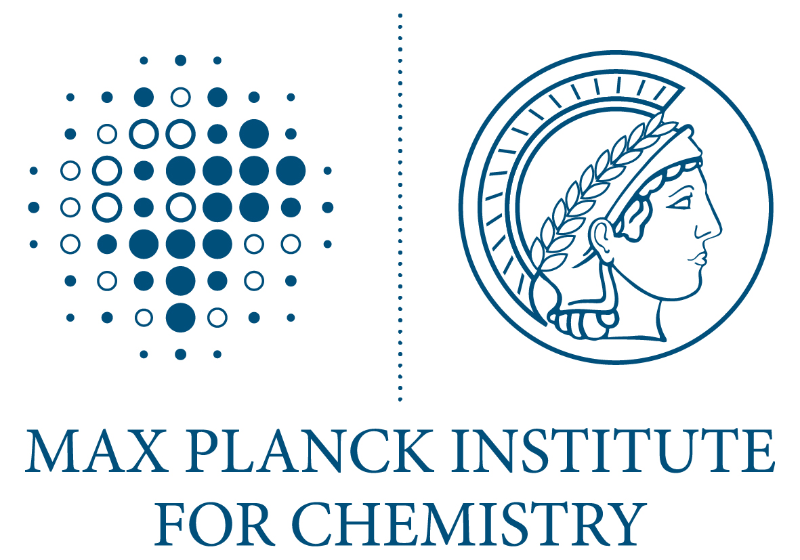
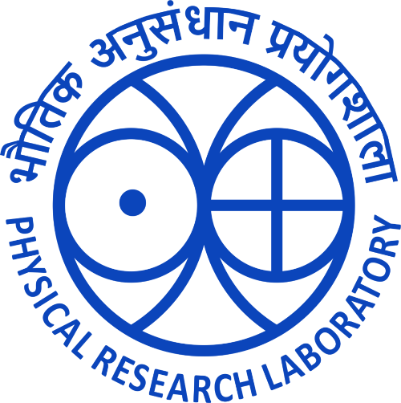
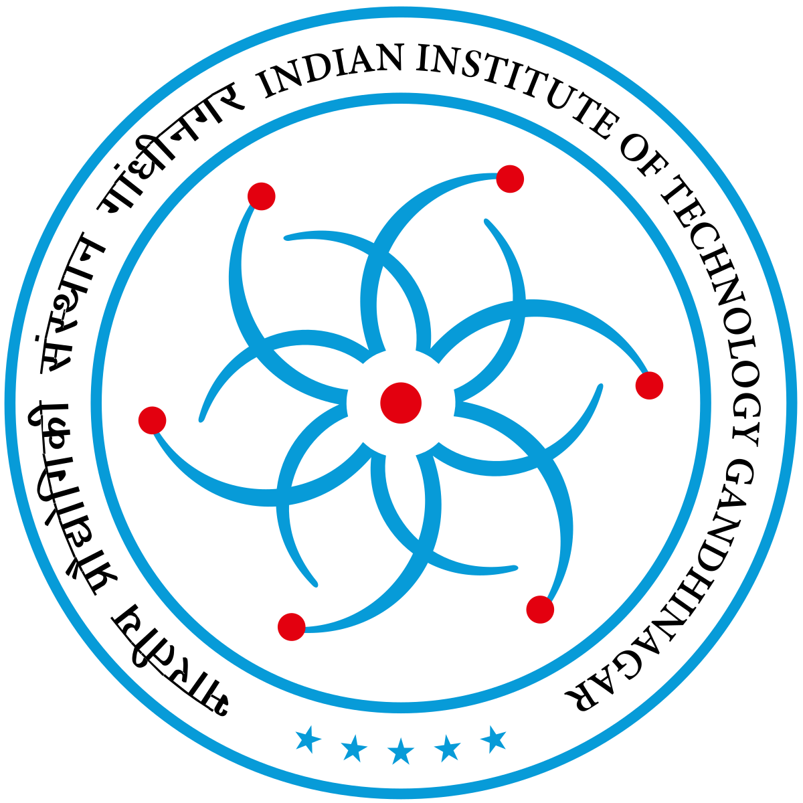

Bio Sketch
Professional Experience
Institute for Atmosphere and Environment, Goethe University Frankfurt
Postdoctoral Research Scientist
July 2025 - Present
Frankfurt, Germany
Joined the institute in the Prof. Joachim Curtius group.
Max Planck Institut für Chemie, Mainz, Germany
Postdoctoral Research Fellow
Jan 2024 - July 2025
Mainz, Germany
Conducting research on atmospheric chemistry with focus on volatile organic compounds and their environmental impact.
- Leading field measurement campaigns
- Developing new analytical techniques
- Mentoring graduate students

Max Planck Institut für Chemie, Mainz, Germany
Humboldt Postdoctoral Guest Scientist
Mar 2022 - Dec 2023
Mainz, Germany
Research under the prestigious Humboldt Postdoctoral Fellowship.
- Joined Prof. Jonathan Williams (Max Planck Institute for Chemistry, Mainz, Germany), group.
- Investigated VOC sources and sinks
- Published 3 peer-reviewed papers
- Presented at international conferences
DID Deutsch-Institut Frankfurt, Gutleutstr. 32 60329 Frankfurt am Main Germany
German Language Course
Jan 2022 - Feb 2022
Frankfurt, Germany
Completed intensive German language training (B1 level).
- Daily immersive language instruction
- Cultural orientation program
Physical Research Laboratory, Ahmedabad, India
Postdoctoral fellow
Jul 2020 - Dec 2021
Ahmedabad, India
Postdoctoral research following completion of PhD.
- Continued atmospheric chemistry research
- Collaborated with international teams
- Supervised instrument maintenance

Education
Ph.D.
2015 - 2020
(Worked at Physical Research Laboratory, Ahmedabad, India)
Ph.D. supervisor: Prof. Lokesh Sahu (Physical Research Laboratory, Ahmedabad, India)
- Atmospheric chemistry and trace gases, precursors of ozone in the troposphere
- Volatile organic compounds (VOCs) and measurements using PTR-TOF-MS
- Long-range transport of trace constituents
- Characterize the emission properties of trace constituents from various sources
- Photochemistry of non-methane hydrocarbons (NMHCs) in the troposphere

Field Experiments & Campaigns
Selected field campaigns, aircraft missions and chamber experiments.
CLOUD-18 Chamber
- Chamber experiments on new particle formation from organic & inorganic gases.
- Explored formation across forest, urban and oceanic atmospheric conditions.
CAFE Pacific (HALO)
- HALO flights measuring chemistry & vertical transport of marine/biogenic VOCs.
- Regions: Pacific Ocean + Tropical Rainforests (Australia / PNG).
- Data processing, flux estimates, and mixing diagnostics.
CAFE Brazil
- Aircraft study of boundary layer and UT chemistry over Amazon rainforest.
- Investigated deep convection, deforestation impacts & trace gas mixing.
- Performed intercomparison & instrument QC.
Delhi & Faridabad
- Photochemical aging of VOCs using PTR-TOF-MS.
- Identified episodic and diurnal source patterns.
- Processed high-resolution time series datasets.
Bay of Bengal
- Deployed VOC & sulfur analyzers on ORV Sagar Kanya.
- Studied oceanic sulfur VOC variability.
- Managed shipboard sampling protocols.
Lucknow VOCs & SOA
- Measured VOCs contributing to SOA formation.
- Local measurement planning & team coordination.
- Generated datasets for air-quality mitigation work.
Delhi Air Pollution
- Source characterisation & photochemical processing of trace gases.
- Investigated health impacts & long-term exposures.
- Coordinated multi-year sampling operations.
Sagar Nidhi (SN#132)
- Studied monsoonal dynamics & atmospheric chemistry.
- Deployed equipment & synchronised sampling systems.
- Supported post-cruise chemical data analysis.
Uttarakhand
- Measured biogenic & anthropogenic VOC sources in temperate foothills.
- Performed fixed-site & mobile sampling.
- Preliminary source apportionment.
Western Ghats
- Studied biogenic VOC emissions in tropical evergreen forest.
- Deployed canopy & surface-level sampling systems.
- Contributed datasets to regional emission inventories.